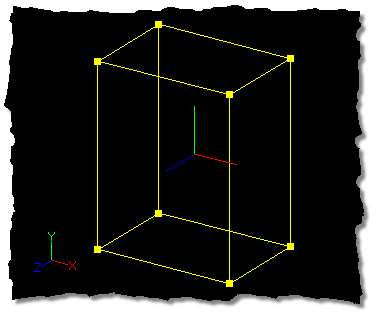

The Standard Manipulator is the yellow box that appears around control points
when they are selected with any of the grouping methods. The Standard
Manipulator box allows free translation of the selected group in addition to unified
scaling.
Related Topics:
Scale Manipulator Mode
Rotate Manipulator Mode